9.1.13 ...的安装 静电消除器 D1 
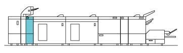
(图 1) sem910001
产品代码
静电消除器 D1: QD200151
静电消除器电晕器 : ED201301
安装步骤
关闭IOT主机和打印服务器, 拔掉电源.

用于 如何 to 关闭电源, 请参阅 the 维修 手册 用于 IOT 和 打印服务器.
检查随附物品.
静电消除器 D1 随附物品 (图 2)
对接 板
Gasket 板 (2)
Cushion
Stopper 支架
旋钮 螺钉
CC挡块
Blind 盖板
OZK-188 30个.
NVM 列表
螺钉 (M4x7 : 2)
螺钉 (M4x8 : 2)
螺钉 (M3x6 : 1)
* 那里 是 编号 illustrations 用于 Items 9 to 12.
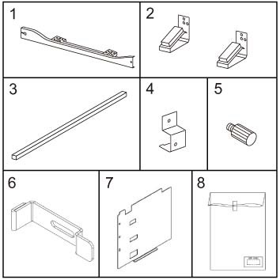
(图 2) sem910002
拆卸 packaging tape 和 packaging material 和 visually 检查 overall appearance.
打开前盖板, 拆卸 packaging tape 和 packaging material 和 visually 检查 overall appearance.
安装 对接 板 到 SEM 组件. (图 3)
安装 对接 板.
拧紧螺钉 (M4x7: x2).
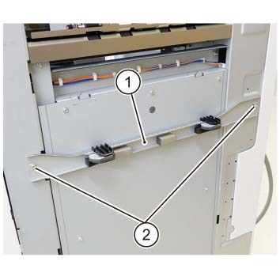
(图 3) sem910003
安装 Gasket 板 到 SEM 组件. (图 4)
对齐 Gasket 板 (x2) 到 位置 marked D.
固定 the Gasket 板 (x2) by using 螺钉 (M4x8).
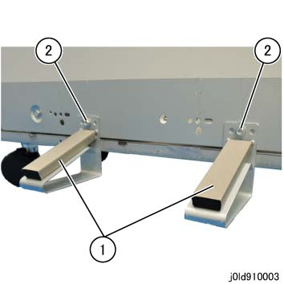
(图 4) ld910003
粘贴 the Cushion 在...上 侧面 L 盖板 的 SEM 组件. (图 5)
安装 Cushion.
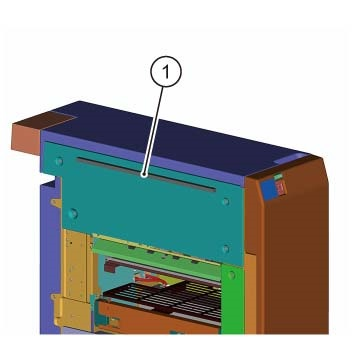
(图 5) sem910004
插入 CC 组件 fully 到 端部. (图 6)
插入 CC 组件 fully 到 端部.
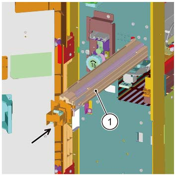
(图 6) sem910012
安装 CC挡块 和 fix it to 右侧 (图 7)
移动 the the CC挡块 to 右侧 和 安装 it.
Fix the CC Stoper.
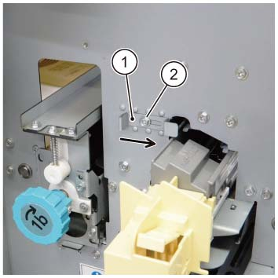
(图 7) sem910013
安装 Blind 盖板 to 左侧 的 CHS or EDIM. (图 8)
此 步骤 已执行 当...时 the HCS or EDIM 已安装 相邻于 the SEM later 模块. 如果 HCS or EDIM 不是 installed 相邻于 the later 模块, keep the Blind 盖板.
拆卸螺钉（x2） 的 HCS or the EDIM.
安装 Blind 盖板.
固定 it by reusing the removed 螺钉（x2）.
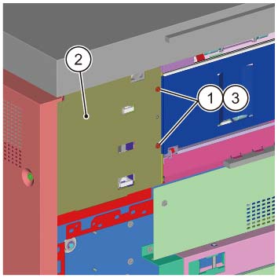
(图 8) sem910014
临时 拆卸螺钉 哪个 secures the 对接 释放 杠杆 的 SEM 组件. (图 9)
拆卸螺钉.
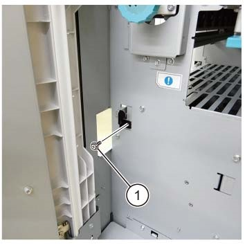
(图 9) sem910005
Dock the SEM 组件 到 上游 模块. (图 10)
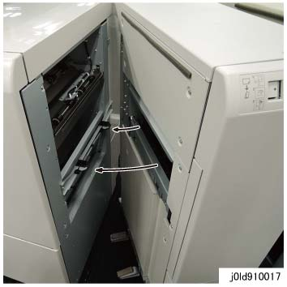
(图 10) ld910017
拆卸 后面 连接器 盖板 的 SEM 组件. (图 11)
拆卸螺钉 (x1).
拆卸 后面 连接器 盖板.
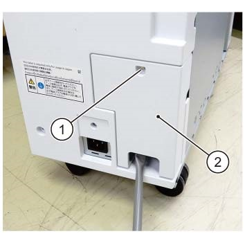
(图 11) sem910006
拆卸后盖板. (图 12)
释放 电缆 卡箍.
拆卸螺钉（x5）.
拆卸后盖板.
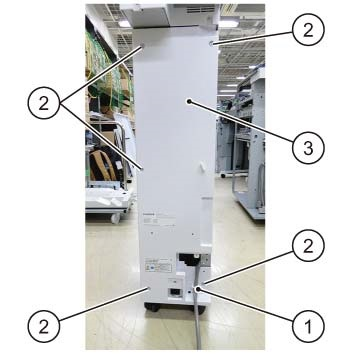
(图 12) sem910007
检查 折叠器 组件 高度, 和 the gap 和 alignment 的 上游 模块 和 SEM 组件. (图 13)
确保 the 上部/下部 gaps 是 相同.
The 高度 difference 之间 the 上游 模块 和 SEM 组件 前面/后面 应 +/-2mm 和 电平.
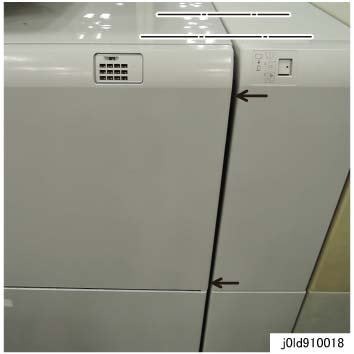
(图 13) ld910018
执行 最大到 步骤 19 to 调整 SEM 组件 高度, 和 the gap 和 alignment 的 上游 模块 和 SEM 组件.
拆卸 前面 下部 盖板 组件. (图 14)
拆卸螺钉（x2）.
拆卸 前面 下部 盖板 组件.
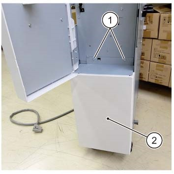
(图 14) sem910008
拆卸 Wrench 的 CDM or 装订器 D6.
当...时 using the Wrench, take 注意 of burrs at 框架.
调整 by rotating the Caster (x2) 在前面. (图 15)
旋转 the Caster (x2) to 调整.
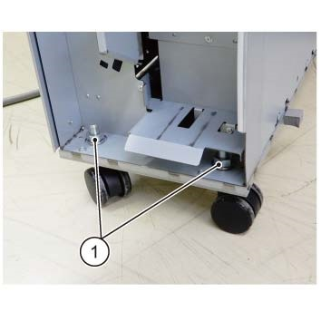
(图 15) sem910009
调整 by rotating the Caster (x2) 在后面. (图 16)
旋转 the Caster (x2) to 调整.
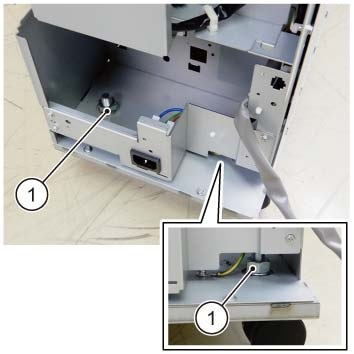
(图 16) sem910010
固定 the 对接 释放 杠杆. (图 17)
固定 it by using 螺钉.
(图 17) sem910005
Reinstall the 后面 盖板 的 SEM 组件 to 原始 state.
连接电源线 到 SEM 组件. (图 18)
连接电源线.
安装 Stopper 支架.
固定 it by using the 旋钮 螺钉.
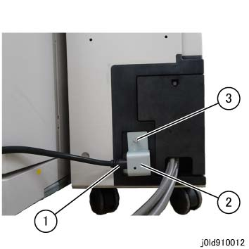
(图 18) ld910012
连接 SEM 电缆.
[用于 machines 和/与 SMG 不 installed] (图 19)
连接 电缆 到 CDM.
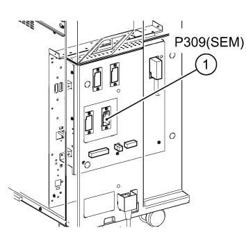
(图 19) sem910011
[用于 machines 和/与 SMG installed] (图 20)
连接 电缆 到 SMG.
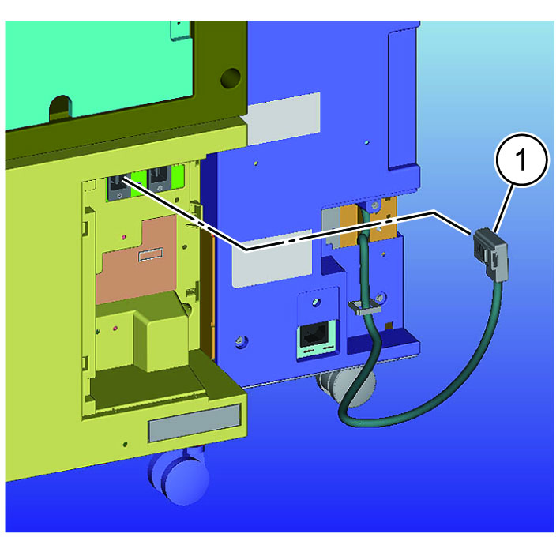
(图 20) ism910015
插头 每个 电源 插头 进入 电源 出口 和 打开 IOT 主 电源 开关.
打开电源 开关.
检查 操作.
Take 出 关于 10 media (OZK-188) 从 the included OZK-188 30个.
加载 在 trays 其他 比 the 手送纸盘.
If 那里 is an Air Suction 送纸 纸盘, 设置 it 到 Air Suction 送纸 纸盘.
设置 Multi-digital 开关 to 0.
打印 5 纸张 的 设置 media 和 检查 sticking feeling (easy to 对齐, easy to peel 关闭/脱离, 等.) 之间 the films.
Chart: 设置 HT 20% of 任何 颜色 和/与 built-in pattern
出纸盘: HCS / EDIM 顶部 纸盘 or D6-装订器 顶部 纸盘
One-侧面 打印 出

这些 procedures 必须 printed 出 和/与 one-侧面 输出.
设置 Multi-digital 开关 to 75 (medium 温度 和 medium 湿度 环境).
设置 to 85 in a 低 湿度 环境 (30% or 更少) 和 65 in a 高 湿度 环境 (80% or 更多).
打印 5 纸张 的 设置 media 和 检查 sticking feeling (easy to 对齐, easy to peel 关闭/脱离, 等.) 之间 the films.
Chart: 设置 HT 20% of 任何 颜色 和/与 built-in pattern
出纸盘: HCS / EDIM 顶部 纸盘 or D6-装订器 顶部 纸盘
One-侧面 打印 出
这些 procedures 必须 printed 出 和/与 one-侧面 输出.
如果 可以 confirmed 该 the sticking feeling 之间 the films is lessened in (6) 比 in (4), it is judged 该 the film is 运行 normally.
如果 is difficult to make a judgment, increase the 号码 纸张的 to 10 by following the procedures (3), (4) 和 (5), (6) 和 检查 再次.
Store the excess media.
Explain 到 customer 如何使用.